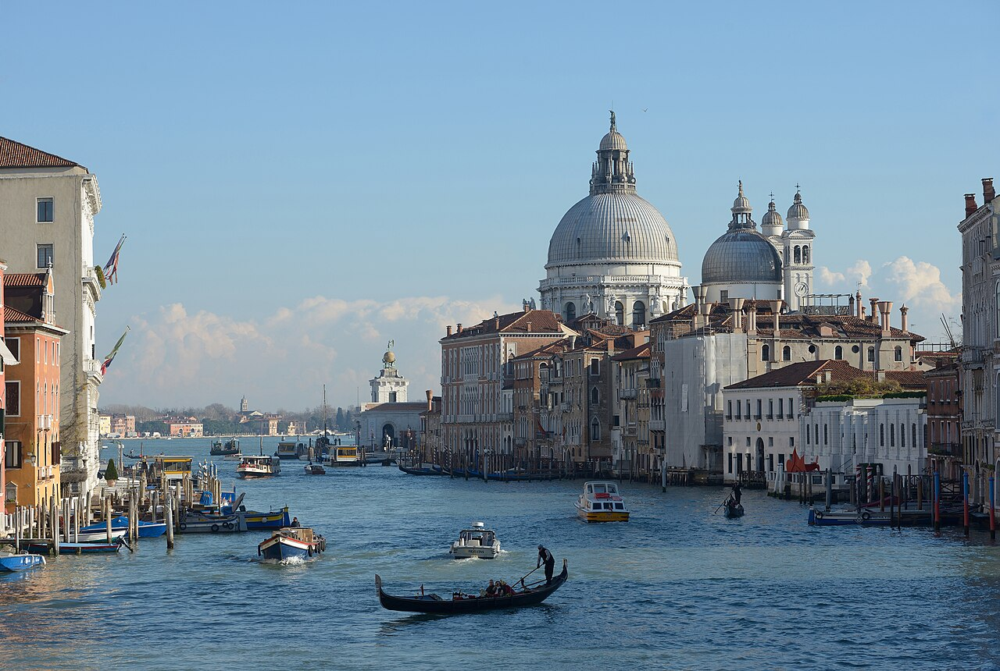

Головні місця
Венеція складається з багатьох островів, з’єднаних мостами. Тут немає звичайних доріг, тому пересуватися містом найкраще пішки або водою. Навіть проста прогулянка вулицями вже є окремою пригодою.
- Великий канал — головна «вулиця» міста;
- Площа Святого Марка та собор Сан-Марко;
- Міст Ріальто — один із найвідоміших мостів Венеції;
- Палац Дожів — пам’ятка історії та архітектури;
- Прогулянка на гондолі вузькими каналами.

Що скуштувати
У Венеції радять спробувати маленькі закуски чікетті, свіжу рибу та ризото з морепродуктами. У місцевих барах можна взяти кілька різних закусок і влаштувати собі невелику гастрономічну прогулянку.
Мої враження
Найбільше запам’ятався ранок, коли ми вийшли до каналу ще до того, як на вулицях з’явилося багато туристів. Вода була спокійною, десь чувся плескіт весел, і місто здавалося зовсім іншим — тихим і майже казковим.